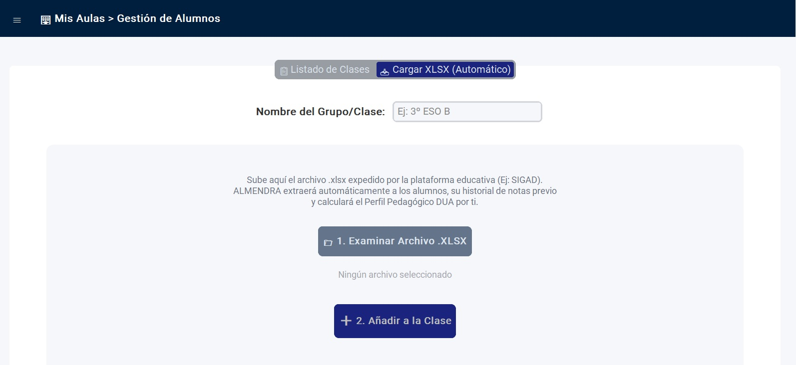
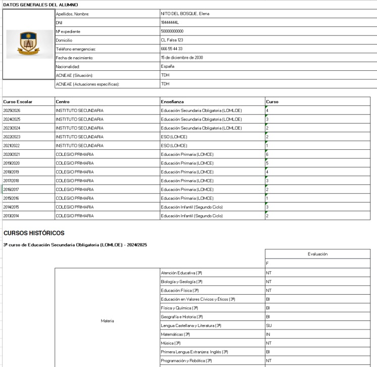
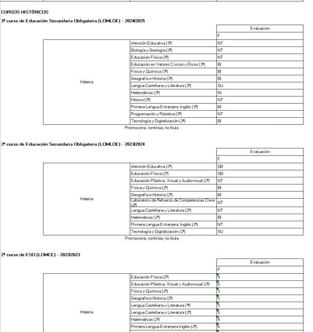

Arquitectura de integración con SIGAD Académica
El primer reto operativo del ALMENDRA es eliminar la introducción manual de la información del alumnado. Para lograr un despliegue ágil y en bloque, el software se ha diseñado para poder integrarse con el ecosistema administrativo oficial de la Comunidad Autonoma de Aragón SIGAD ACADÉMICA.
- Extracción en origen: El docente descarga los archivos correspondientes a los cuadernos del profesor de cada estudiante en formato .xls directamente desde la plataforma de SIGAD ACADÉMICA. Este paso es el único que todavía se mantiene manual y viene derivado por el propio tratamiento que debe realizarse de esta información sumamente sensible.
- Carga en bloque (Ingesta masiva): Una vez obtenidos todos los archivos de todos y cada uno de los estudiantes de nuestra clase en formato .xls éstos se introducen directamente y en bloque en la interfaz de ALMENDRA. El sistema no requiere que el usuario procese, limipie o divida la información de manera previa.

Mecanismo de parsing
El software ALMENDRA incluye un método de parseo de estos archivos (mediante análisis sintáctico) y lee estos archivos para extraer de manera inequívoca la identidad e información de cada estudiante incluyendo las materias cursadas en su historial junto con su calificación (tanto cuantitativa como cualitativa).
Mediante estas técnicas de escaneo matricial, el algoritmo ejecuta las siguientes rutinas de extracción:
- Identidad del Alumno: Busca las palabras "APELLIDOS, NOMBRE", "ALUMNO", o "EXPEDIENTE DE". Si no encuentra la etiqueta, usa una expresión regular (regex) en las primeras 10 filas que busca patrones con el formato APELLIDO, NOMBRE (todo en mayúsculas). Si todo falla, lo nombra "Alumno Desconocido".
Etapa Educativa: Busca "ENSEÑANZA", "ESTUDIOS", o "ETAPA". Con este valor decide si el alumno pertenece a "PRIMARIA" o "SECUNDARIA" (por defecto asume Primaria si no hay datos). - Necesidades Educativas (NEE/ACNEAE): Rastrea las filas buscando palabras como "SITUACION", "NECESIDAD", "NEE" y las medidas adoptadas buscando "ACTUACION", "MEDIDA". Si encuentra algo, lo une bajo un perfil ACNEAE; si no, etiqueta al alumno con perfil "Ordinario".

Extracción secuencial del historial académico
Una vez parametrizado el perfil del alumno, el software actúa como un escáner con estado y memoria persistente, evaluando el documento fila por fila para reconstruir el histórico de calificaciones bajo la siguiente lógica algorítmica:
- Determinación del marco normativo y temporal: El sistema localiza los rangos correspondientes al año escolar (ej. 2024/2025) y el nivel del curso entre paréntesis (ej. 1º). A partir de ahí, identifica la ley educativa reguladora mediante el rastreo de los acrónimos LOMLOE o LOMCE. Esta distinción es crítica, ya que bifurca el modelo matemático de cálculo y conversión que se aplicará con posterioridad.
- Aislamiento de asignaturas: Se examinan las celdas descartando valores puramente numéricos, calificaciones cualitativas o cadenas de texto prohibidas dentro del árbol académico (tales como "TUTORÍA", "FALTAS", "OBSERVACIONES" o "CONDUCTA"). Al validar una materia legítima, se aplica una función de limpieza de cadena (string sanitization) para remover sufijos e indicadores de curso (ej. transformar "Matemáticas (2º)" en "Matemáticas"), garantizando la perfecta concordancia con los identificadores de la base de datos local.
- Conversión y normalización de calificaciones: Tras validar la asignatura, el motor inspecciona las celdas adyacentes de la derecha. Si la calificación es de carácter cualitativo, invoca un diccionario traductor indexado bajo la siguiente escala formal:
| Calificaciones cualitativas |
|---|
| INSUFICIENTE (IN) = 3.0 |
| SUFICIENTE (SU) = 5.0 |
| BIEN (BI) = 6.0 |
| NOTABLE (NT) = 7.5 |
| SOBRESALIENTE (SB) = 9.0 |
| NO PRESENTADO (NP) = 0.0 |
Si la calificación original ya es numérica, se valida su consistencia dentro del rango matemático [1.0, 10.0]. Las notas bajo el contexto normativo LOMLOE son sometidas a una función específica de normalización curricular, mientras que los registros procedentes de la ley LOMCE se asimilan directamente con su valor numérico decimal original.
Una vez finalizada la persistencia de los datos en el modelo relacional, el sistema ejecuta de forma interna y automatizada el motor analítico de ALMENDRA. Este disparador (trigger) inicia los procesos de cálculo de los perfiles competenciales, las derivas competenciales y las alertas de intervención pedagógica aplicables al grupo-aula.
